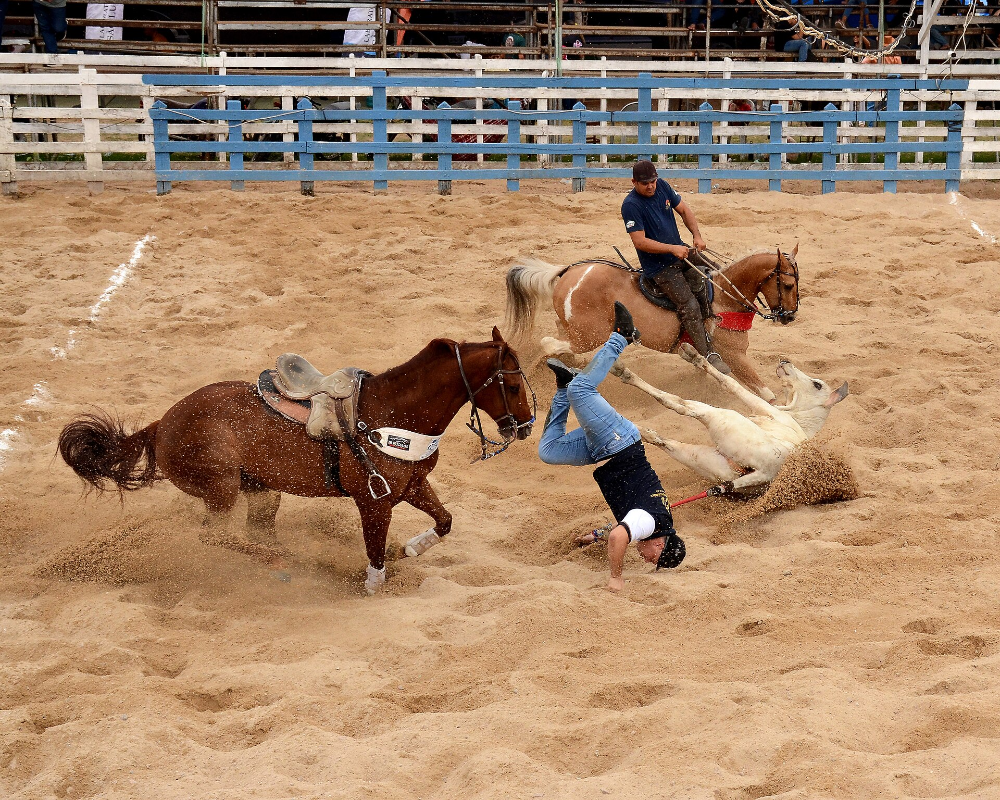
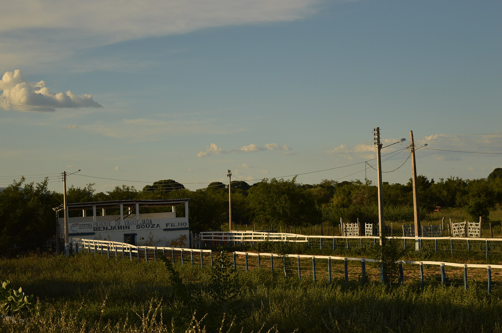
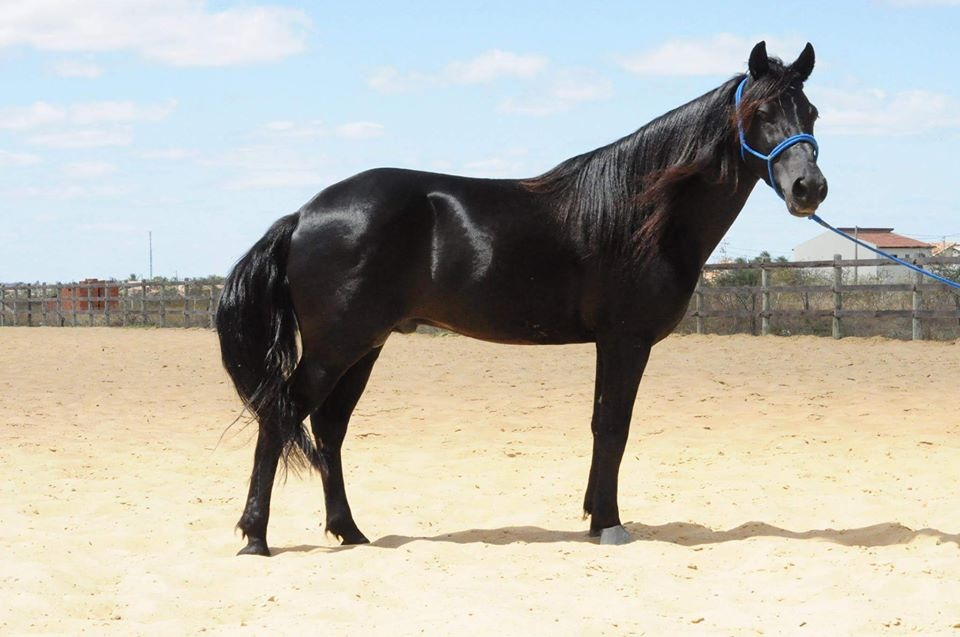

Raízes fortes
Memória e saberes do sertão.

Uma cultura feita de coragem, parceria e respeito. Explore a história e o esporte que nasceram no sertão.
A vaquejada se relaciona com as formas de criação, busca e manejo do gado que se desenvolveram no interior nordestino. Sua trajetória combina trabalho rural, memória regional e competições organizadas.
Este portal aproxima história e esporte com fontes identificadas. Quando os documentos não permitem afirmar uma data, um título ou uma linhagem, essa lacuna fica explícita.
Uma história para conhecerMemória e saberes do sertão.
Regras, estrutura e novas gerações.
Contexto claro, dados sem invenção.

Foto: Negrosoousa · CC BY-SA 4.0Consulte eventos identificados por circuito, temporada e fonte.
Explorar competições
Foto: Fronteira · CC BY-SA 4.0Ranking Nacional ABVAQ por categoria, capturado em 18/11/2026.
Consultar tabela e critériosDados esportivos são capturas editoriais com fonte e data; não há sincronização automática com os organizadores.

Conheça cavalos citados em resultados e no Hall da Fama do Portal. Pedigree, registro e fotografia só aparecem quando documentados e com uso permitido.
Conheça os cavalosA associação citou representantes do Campeonato Portal Vaquejada, Circuito BYD e Circuito ACQM-PE em reunião sobre melhorias para o esporte.
Ler comunicado oficialReportagem do Portal registra 590 pontos para Jurubeba e 1.030 para seu cavalo Romarinho Show no Hall da Fama do campeonato.
Ver o registro e a fonteO Portal lista o evento no Haras AD de 1 a 6 de dezembro, com premiação total anunciada de R$ 400 mil.
Consultar calendário e ressalvas